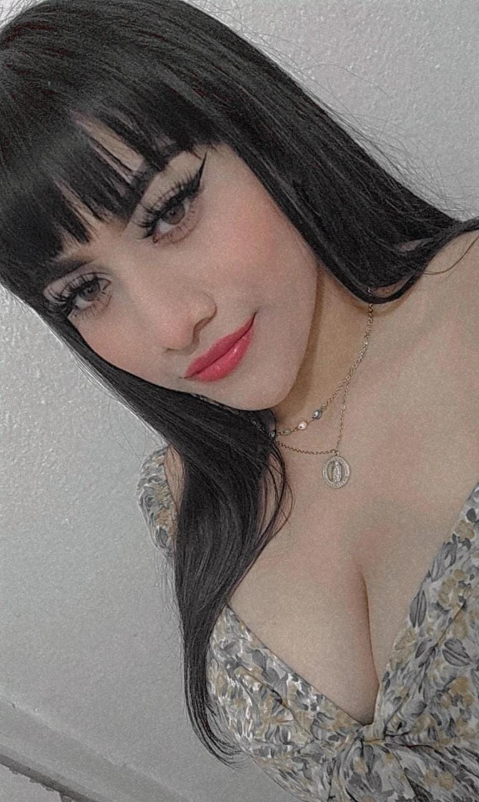

Misión
La misión del proyecto escolar del sitio web es educar a los visitantes sobre la importancia de reducir la contaminación en el arroyo y enseñarles maneras correctas de reducir los residuos que pueden acabar en el arroyo. Buscamos aumentar la conciencia sobre los efectos negativos que los residuos pueden tener en el medio ambiente y animar a las personas a tomar medidas para reducir su impacto en el arroyo y en el planeta en general. Nuestra meta es fomentar una cultura de cuidado y responsabilidad ambiental a través de la educación y la información en nuestro sitio web.
Visión
La visión del proyecto escolar del sitio web es crear un movimiento positivo en la comunidad local y más allá, en el cual las personas tomen medidas activas para reducir la contaminación del arroyo y otros cuerpos de agua. Queremos inspirar a las personas a tomar acción y a asumir la responsabilidad de su impacto en el medio ambiente, promoviendo un cambio de comportamiento a largo plazo. Buscamos ser reconocidos como un recurso confiable para la información y la educación sobre la reducción de la contaminación de los arroyos y otros cuerpos de agua, así como para la promoción de la conservación ambiental y la sustentabilidad. Nuestra visión es un futuro en el que los cuerpos de agua están limpios y saludables, y donde la comunidad trabaja junta para lograr una coexistencia armoniosa con el medio ambiente.
Nuestro equipo de trabajo
|
Damián Abad Gómez Castillejos |
Estefani Wendali Gómez Gómez | Karen Ivon Hernández Domínguez |
Gustavo Gael Mayoral Palacios |

María Fernanda Vázquez Náfate |